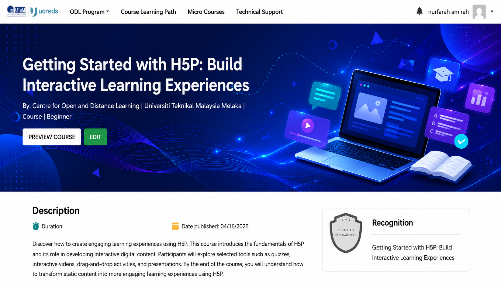
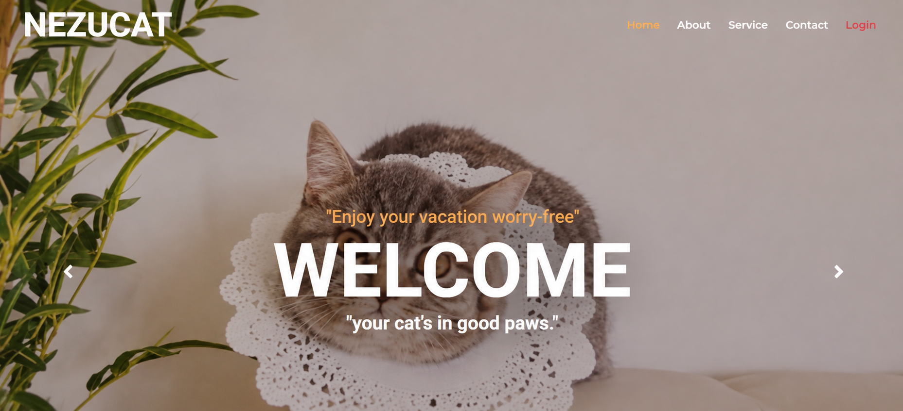

HELLO, I'M
Nurfarah Amirah
Software Developer
AI & Web Development Enthusiast passionate about building practical and meaningful digital solutions.
ABOUT ME
Turning Ideas Into Digital Solutions
I am a Computer Science graduate with a strong interest in software development, artificial intelligence, and web technologies.
During my internship at the Centre of Open and Distance Learning (CODL), Universiti Teknikal Malaysia Melaka (UTeM), I gained hands-on experience in developing web applications, AI-powered solutions, interactive learning content, and multimedia resources.
I enjoy learning new technologies, solving problems, and building practical digital solutions that create meaningful user experiences.
MY SKILLS
Technologies & Tools
PHP
Web Development
MySQL
Database Management
JavaScript
Web Development
HTML
Web Structure
CSS
Web Styling
Artificial Intelligence
AI Integration
H5P
Interactive Learning
Video Editing
Multimedia Content
MY WORK
Featured Projects

SmartAI – AI-Powered Course Generator
An AI-powered web application developed to generate structured e-learning courses from uploaded learning materials. The system integrates AI with PHP, MySQL, JavaScript, HTML, and CSS.
View Details →
H5P Interactive Learning Content
Developed interactive digital learning materials using H5P, including quizzes, interactive videos, drag-and-drop activities, and other engaging learning activities.
View Details →
Educational Technology & Digital Learning
Developed digital learning resources and multimedia content using educational technology tools such as Articulate Rise, Colossyan AI, Rokoko Studio, and Virtual Production technologies.
View Details →
Nezucat Hotel Management System
A web-based hotel management system developed for cat boarding services, allowing users to manage customer information, cat profiles, room bookings, reservations, and related services.
View Details →
Westbourne Smokehouse Cafe System
A web-based cafe management system developed to support customer ordering, menu management, reservations, payments, inventory, and order tracking.
View Details →MY EXPERIENCE
Professional Experience
Software Developer Intern
Centre of Open and Distance Learning (CODL), UTeM
- Developed SmartAI, an AI-powered web application for generating structured learning content.
- Worked with PHP, MySQL, JavaScript, HTML, CSS, and AI integration.
- Designed and developed interactive H5P learning content for digital learning initiatives.
- Produced tutorial videos and multimedia resources for educational technology platforms.
- Prepared technical documentation and user manuals for educational technology tools.
MY EDUCATION
Academic Background
Diploma in Computer Science
Universiti Teknologi MARA (UiTM)
Studied software development, programming, database management, web technologies, system analysis, and computer science fundamentals.
Diploma in Computer ScienceGET IN TOUCH
Let's Connect
I'm currently open to entry-level opportunities in software development, web development, and IT-related roles.